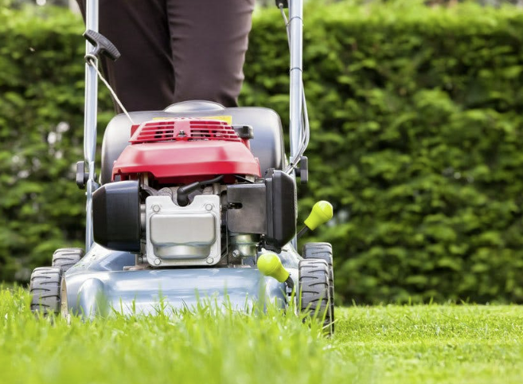

Os Meus Passatempos
Sou apaixonado por atividades que relaxam e estimulam a criatividade. A bricolage é uma delas, permitindo-me transformar ideias em projetos únicos e úteis.
Além disso, sou um grande fã do Sporting Clube de Portugal, acompanhando jogos e celebrando as conquistas do clube do meu coração.
